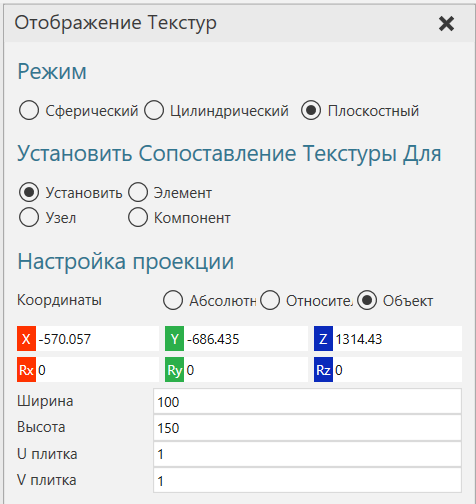
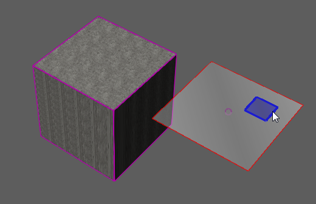
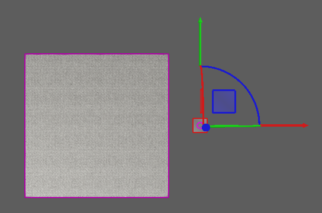

Координаты текстуры могут быть назначены геометрии с помощью инструмента отображения для сферических, цилиндрических и плоских проекций. Это позволяет отображать текстуру материала на объекты в трехмерном мире.
1.На вкладке Моделирование в группе Геометрия, нажмите стрелку Инструменты , а затем в разделе Материал нажмите Сопоставление.
2.На панели задач Отображение текстур выполните следующие действия:
·В разделе Режим, выберите тип проекции.
·В разделе Установить сопоставление текстуры для, выберите тип объекта, которому вы хотите присвоить координаты текстуры.

3.В трехмерном мире щелкните объект, чтобы назначить ему текстурные координаты. Если текущий материал объекта не имеет текстуры, временная текстура будет отображаться и проецироваться на объект в 3D-мире. В любом случае, вы должны иметь возможность представить, как текстура будет применена к поверхности выбранного объекта на основе его материала.
4.Выполните одно или несколько из следующих действий.
·Чтобы переместить проекцию на выбранный объект, используйте либо инструмент Переместить в трехмерном мире или отредактируйте местоположение в панель задач Отображение текстуры. В любом случае вы перемещаете проекцию, а не объект.

·Чтобы отредактировать размер проекции, в панели задач Отображение текстуры, под Настройка проекции , наберите Ширину и Высоту. Это определяет размер UV-пространства перед наложением текстуры.

·Чтобы отредактировать масштаб каждого тайла в проекции, в панели задач Отображение текстуры, под Настройка проекции , наберите U Плитка и V Плитка. Масштаб каждой плитки связан с размером ее UV-пространства, например Width/U Tiling и Height/V Tiling.

5.На панели задач Отображение текстур, сделайте одно из следующих действий:
·Чтобы подтвердить сопоставление и сохранить все изменения, нажмите Закрыть .
·Чтобы отменить сопоставление и отменить все изменения, нажмите Отмена.
·Чтобы внести изменения в текущее сопоставление, вернитесь к шагу 2.
·Чтобы назначить координаты текстуры другим объектам, вернитесь к шагу 2 и выберите другой объект.
Примечание: Примитивы лучше преобразовать к элементу Геометрия с помощью комманды Свернуть функции, т.к. возможно смещение текстуры после сохранения.
Пример. Наложение текстуры на поверхность с помощью одного тайла UV

Пример. Наложение текстуры на поверхность с помощью нескольких UV-плиток

Пример. Наложение текстуры на поверхность с меньшим UV-пространством и несколькими UV-тайлами

Пример. Наложение текстуры с выпуклостями на поверхность